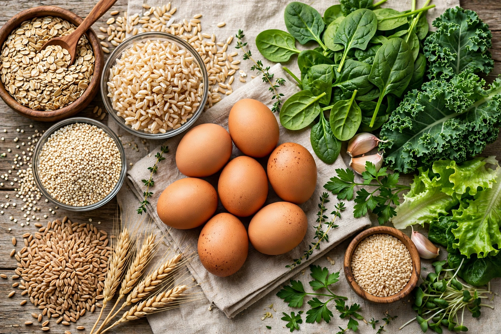

B vitamins
The B vitamins are a class of water-soluble vitamins that play important roles in cell metabolism and the synthesis of red blood cells. Chemically distinct, they are grouped because they are often found together in foods such as meat, whole grains, eggs and leafy vegetables, and several serve as precursors to essential coenzymes.

| Members | B1, B2, B3, B5, B6, B7, B9, B12 |
|---|---|
| Solubility | Water-soluble |
| Main roles | Energy metabolism, coenzymes, red blood cell formation, nervous system |
Members
| Vitamin | Name | Noted deficiency disease |
|---|---|---|
| B1 | Thiamine | Beriberi |
| B2 | Riboflavin | Ariboflavinosis |
| B3 | Niacin | Pellagra |
| B5 | Pantothenic acid | Rare; burning feet syndrome |
| B6 | Pyridoxine | Anaemia, dermatitis |
| B7 | Biotin | Rare; dermatitis, hair loss |
| B9 | Folate | Neural tube defects; megaloblastic anaemia |
| B12 | Cobalamin | Pernicious anaemia; neurological damage |
Function
B vitamins act principally as coenzyme precursors: thiamine in carbohydrate metabolism, riboflavin (FAD) and niacin (NAD) in redox reactions, folate and B12 in one-carbon metabolism and DNA synthesis — deficiency of either impairs red blood cell production by immune and marrow cells' neighbouring lineages. Folate supplementation before and during early pregnancy markedly reduces neural tube defects.
Sources and supplements
A varied diet generally meets requirements, except that vitamin B12 occurs almost exclusively in animal products, so vegans are advised to use fortified foods or supplements. Excess water-soluble B vitamins are excreted in urine, though high-dose niacin and B6 can cause flushing and neuropathy respectively.
See also
B cell · Vitamin · Folate · Vitamin B12